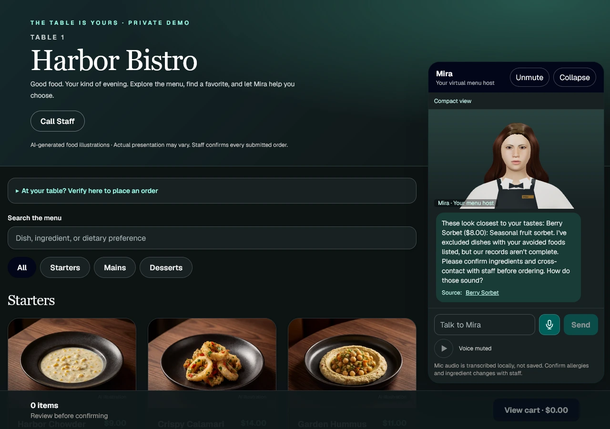

PRIVATE PROTOTYPE
AI Waiter / Flambei
A menu experience that can listen, explain, and help guests choose.

A more helpful restaurant interface
Guests browse a table-specific menu, ask questions, and build a cart through a conversational host. A speaking 3D avatar gives the assistant a visible presence, with captions, mute controls, and a clear way to call staff.
My contribution
Built and iterated the guest experience, database-grounded menu responses, voice and avatar interactions, cart workflows, and operational tools for restaurant staff. Recommendations account for stated preferences and restrictions; menu prices and available options come from the restaurant data.
Designed around real service
The wider system includes owner menu controls, order confirmation, a kitchen queue, table validation, and staff requests. Allergy questions escalate to staff rather than promising safety. This is a private restaurant SaaS prototype, not a claim of a public launch or a live restaurant deployment.